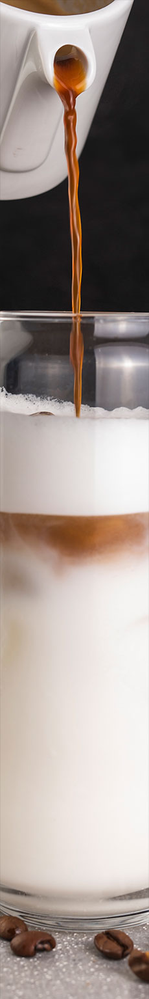
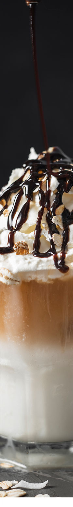

Traditional coffee
Traditional coffee
Трішки про нас:
Ми досить давно працюємо в сфері кави,
маємо багато різних кафешок.
У нас все на найвищі якості,
тому заходьте до нас та
віднайдіть свій особистий смак кави)


